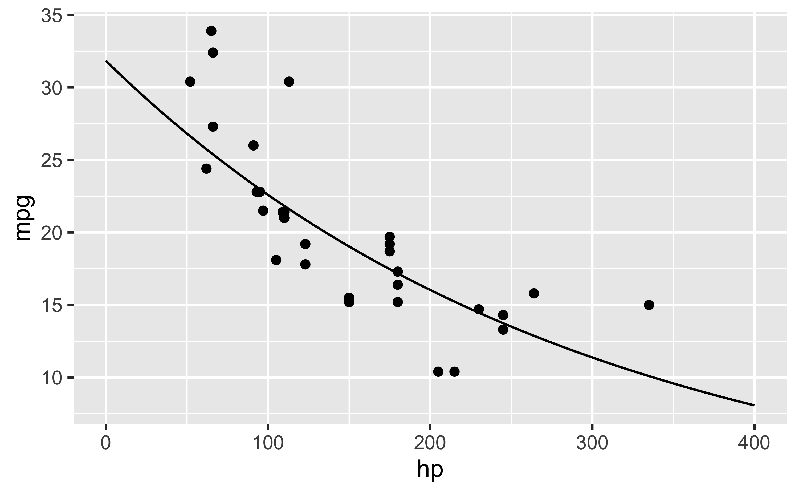
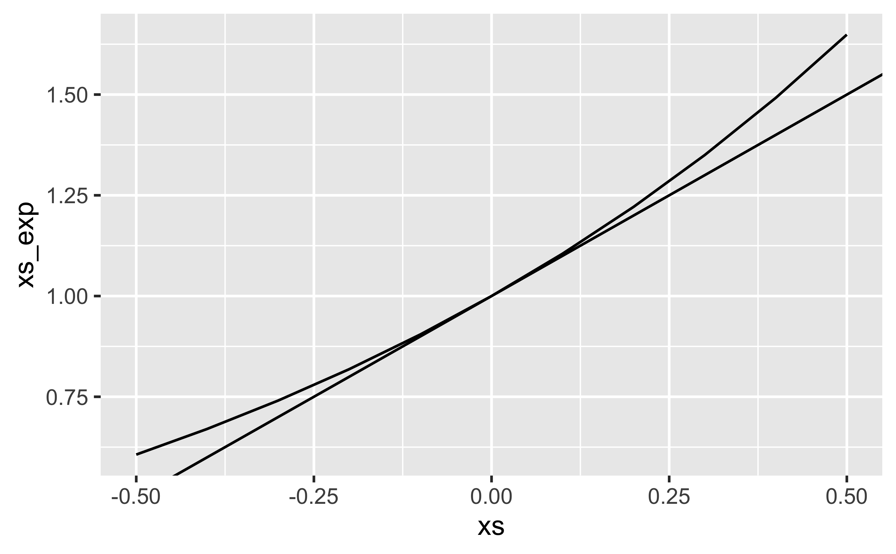
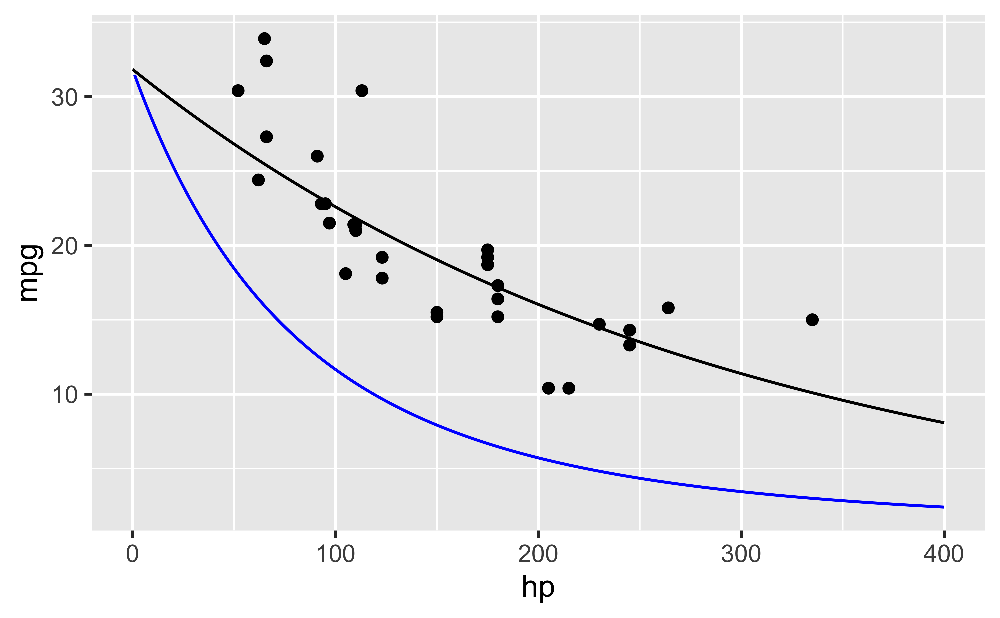

Gelman et al., in “Regression and other stories” are stating that “when additivity and linearity are not reasonable assumptions” it may sense to “take the logarithms of outcomes that are all positive” (p. 189).
A log-y regression can be defined as follows, in the simplest case:
\[\text{log} \, y = b_0 + b_1X_1 + \ldots + \epsilon\] Exponentiating both sides yields
\[y = e^{b_0 + b_1X_1 + \ldots + \epsilon}\]
This is a multiplicative model as can be seen perhaps more lucidly in this notation:
\[y = e^{b0} \cdot e^{b1} \cdot \ldots \cdot e^{\epsilon}\]
In essence, we can make use uf log-y regression for modelling multiplicative assocations between x and y.
A multiplicative associations also means that it is not linear.
Let’s have a look at an example.
## (Intercept) hp
## 3.460466874 -0.003428734The coefficent of the predictor is reported as -0.0034287. Exponentiating this values yields approx.
## hp
## 0.9965771Thus, one more unit in \(X\) increases \(Y\) by exp(b1).
In this case, exp(1) amounts to 0.9965771.
Of course, factors below one indicate a decrease in \(Y\).
In this example, we find a decrease of approx. 0.035% change in y associated with a one unit change in x.
Let’s have a look at the predictions:

There’s a useful shortcut to interpreting log-y regression coefficients.
Compare this following (small) figures and their respective exponentiated values:

As can be seen, as long as the (x) values are small - as it is often the case for (properly scaled) regression model coefficients - we can easily translate between the x’s and their exponentiated values. The values are very similar, given that the x is around zero (say, between -.25 and +.25).
In short, in a log-y regression a coefficient of x means a change of b1 percent in y (given that the coefficent is around zero).
Let’s have a check:
## [1] 31.44682